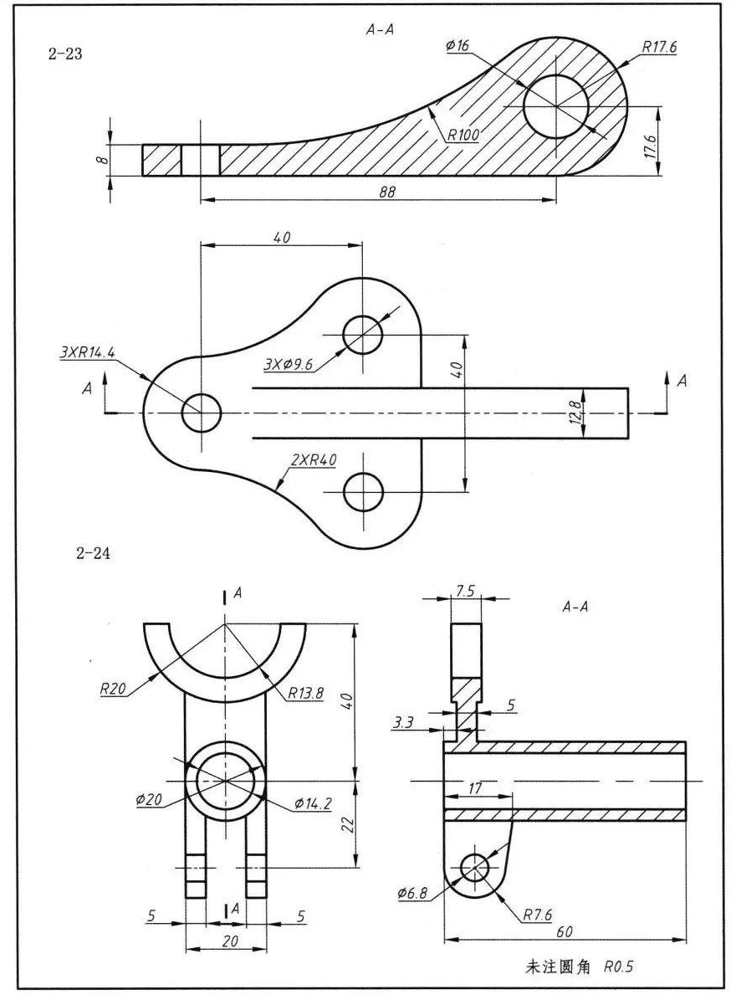

投影与视图
起源：当画家开始"看见"三维
你有没有注意过，照片里的铁轨明明是一样宽的，但看起来越远越窄，最后在远处汇成了一个点？这就是透视——人类用眼睛看世界的方式。
在很长一段时间里，人们画的画是"平"的——古埃及壁画中的人物全是侧面，看不出远近。直到 15 世纪，意大利建筑师布鲁内莱斯基发明了线性透视法，画家们才第一次能画出"看起来像真的"空间。达·芬奇的《最后的晚餐》就是透视法的巅峰之作。
但工程师和数学家不满足于"画得像"——他们需要精确地把三维物体表现在二维平面上。于是，投影几何诞生了。18 世纪法国数学家蒙日（Gaspard Monge）系统化了画法几何，提出了用多个平面图来精确描述立体形状的方法。你猜怎么着？蒙日的方法后来成了全世界工程师画图纸的标准——三视图。
《古今数学思想》中写道："蒙日的画法几何，让工程师不再依赖直觉和猜测，而是用精确的数学方法描述三维世界。"
一、投影：把三维世界"拍"成二维
投影，简单说，就是用光线把物体"照"到一个平面上，得到它的影子。这个影子就是物体在平面上的投影。
根据光线的不同，投影分为两种：
1. 中心投影
光线从一个点发出（就像路灯、手电筒），照在物体上形成影子。这种投影的特点是：物体离光源越近，影子越大。你的影子在路灯下就是这样——你离路灯越近，影子越长。
中心投影：光线从一个点发出 → 影子可能比物体大，也可能比物体小（取决于距离）。近大远小，就像人眼看东西一样。
2. 平行投影
光线互相平行（就像太阳光——太阳离我们太远，射来的光线几乎平行），照在物体上形成影子。平行投影中，物体的大小和影子的大小成固定比例，不会"近大远小"。
平行投影又分为两种：
- 正投影：光线垂直于投影面。这是工程制图中最常用的投影方式。
- 斜投影：光线倾斜于投影面（不垂直）。
三视图用的就是正投影——光线从正前方、正上方、正左方垂直照过来，分别得到三个投影图。
二、三视图：从三个方向"看"同一个物体
如果只看一个方向的投影，你可能会看错物体。比如从正前方看，一个圆柱和一个长方体可能看起来都是矩形——但你能区分吗？
所以，工程师用三个互相垂直的方向来观察一个物体，得到三张图：
| 视图 | 观察方向 | 看到什么 |
|---|---|---|
| 主视图 | 从正前方看 | 物体的高度和长度 |
| 俯视图 | 从正上方往下看 | 物体的长度和宽度 |
| 左视图 | 从正左方看 | 物体的宽度和高度 |
三视图的摆放规则（非常重要！）：
在图纸上，三视图的摆放位置是固定的：主视图在上方，俯视图在主视图的正下方，左视图在主视图的正右方。而且三个视图必须"对齐"——
- 主视图和俯视图：长对正（长度一样，上下对齐）
- 主视图和左视图：高平齐（高度一样，左右对齐）
- 俯视图和左视图：宽相等（宽度一样）
示例：一个 L 形积木的三视图
想象一个 L 形积木：正面宽 3、高 2（呈 L 形），侧面深 1、高 2，上面宽 3、深 1。我们来画出它的三视图：
总结：三视图就像是给物体拍了三张 X 光照片——从正面、上面、左面各拍一张。把这三张照片组合起来，你就能完全确定这个物体的形状。
三、由三视图还原立体图形
这是三视图最有趣也最有挑战性的部分——给你三张平面图，你能在脑海中"拼出"它原来的立体形状吗？
这就像侦探破案：从三个方向的"线索"推理出真相。
方法：逐层"搭建"
步骤：
- 看俯视图：确定物体的"底面积"——有几行几列，每个位置有没有方块。
- 看主视图：确定每一列的最高高度。
- 看左视图：确定每一行的最高高度。
- 综合：在每个位置填上"不超过两个视图限制"的方块数。
例题：还原立体图形
根据下面的三视图，想象这个立体图形是什么样子的？它由几个小正方体组成？
推理过程：
1. 看俯视图：底面是 2×2 的方格，4 个位置都有方块 → 底面至少有 4 个。
2. 看主视图：左边一列高 2，右边一列高 1 → 左前和左后位置中至少有一个高度为 2。
3. 看左视图：前面一行高 2，后面一行高 1 → 左前和右前位置中至少有一个高度为 2。
4. 综合：左前位置既要满足主视图左边高 2，又要满足左视图前面高 2，所以左前位置高度为 2。其他位置高度为 1。总共：2 + 1 + 1 + 1 = 5 个。
四、制作立体模型（课题学习）
学了三视图之后，最好的理解方式就是动手做。找一些正方体小积木（或者用橡皮切成小方块），来玩一个"设计师游戏"：
游戏规则：
- 角色 A（设计师）：用 4~8 个小正方体搭出一个立体图形，然后画出它的三视图。
- 角色 B（工程师）：只看三视图（不看实物），用小正方体还原出立体图形。
- 检验：比较两人的模型是否完全一样。
如果没有积木，也可以用方格纸画三视图，然后在方格纸上标注每个位置的高度数字（这叫"俯视图标注法"），再用橡皮泥捏出形状。
思考：如果只给主视图和俯视图（不给左视图），你能唯一确定一个立体图形吗？试试看，你会发现有时候三视图缺一不可！
图说数学史：从蒙日到 CAD
加斯帕尔·蒙日（Gaspard Monge，1746—1818）：法国数学家，"画法几何之父"。他年轻时在军事学校读书，因为出身平民，只能做最枯燥的绘图工作。但他没有抱怨，反而把绘图变成了数学——他从绘制防御工事中总结出了一套精确描述三维形状的方法。后来拿破仑发现了他的才华，任命他为部长。蒙日的画法几何在很长一段时间里是法国的军事机密，直到 1795 年才公开。
现代应用：今天你用的所有产品——手机、汽车、椅子、大楼——在制造之前，设计师都用三视图（以及更复杂的投影图）来精确描述每一个零件的形状。计算机辅助设计（CAD）软件的核心原理，就是蒙日 200 多年前发明的画法几何。
下面是一个机械零件的三视图实例（来自 CAD 软件），可以看到主视图、俯视图和左视图如何精确描述一个零件的形状：

《一个数学家的叹息》中 Lockhart 说："数学不是计算，而是观察模式。三视图就是观察三维世界的一种模式语言。"
中国古代的工程制图
三视图虽然是蒙日在 18 世纪系统化的，但中国人用"图样"来精确描述工程对象的历史同样悠久。
春秋战国时期收录入《周礼》的《考工记》，是中国现存最早的工艺规范文献。书中记载了车轮、兵器、乐器等器物的制作标准，要求工匠"审曲面势"——即观察曲面的形状和走向，这其实已经蕴含了"从不同方向观察、用平面图描述立体"的投影思想。书中对"磬"（一种石制乐器）的描述，要求根据石料的曲直程度来加工，说明古人已懂得用多个视角来描述复杂形状。
北宋李诫编撰的《营造法式》（1103 年）是中国古代建筑学的集大成之作。书中收录了大量建筑构件的图样，采用了类似现代三视图的画法——用"正样"（正面图）、"侧样"（侧面图）、"分样"（分件图）等多个视角来精确描述斗栱、梁柱的形状和尺寸。图样采用统一的"材分制"标注尺寸，这与现代工程图纸按比例标注如出一辙。
《营造法式》中的图样被认为是中国古代工程制图的高峰——它比蒙日的画法几何早了 600 多年，足见中国古人在"用二维图描述三维世界"上的智慧。
挑战性问题
互动演示：圆柱体的投影
下面是一个可旋转的圆柱体，配备一个光源和它在地面上的投影（影子）。点击按钮可快速查看正面、上面、左面三个方向的视图。
问题 1：一个圆柱体，分别从正面、上面、左面看，看到的形状分别是什么？
问题 2：如果俯视图是一个圆，主视图和左视图都是矩形，这个立体图形可能是什么？
问题 3：只用主视图和俯视图（不给左视图），你能搭出几种不同的立体图形？试试用 3 个正方体，看看有多少种可能。
拓展阅读：视图的产生与应用
不只是工程：三视图的思维远不止用于工程制图。在医院里，CT 扫描就是利用 X 光从多个角度"投影"，然后计算机用数学方法还原出人体内部的立体图像。你看到的 CT 切片，本质上就是"无数个俯视图"。
地图投影：把球形的地球表面画在平面地图上，这就是一种投影。不同的投影方法（墨卡托投影、等面积投影等）各有优缺点——有的保持形状，有的保持面积，但没有一种能同时保持两者。这是因为球面无法完美展开成平面——这是高斯在 1827 年证明的数学定理。
计算机图形学：你玩的 3D 游戏、看的动画电影，电脑在每一帧都要把三维场景"投影"到二维屏幕上。显卡每秒要处理数百万次投影计算——这就是蒙日几何的现代版。
推荐阅读：《古今数学思想》——了解画法几何的诞生；《Flatland》（平面国）——一本用二维生物视角思考三维世界的有趣小说。
习题
1. 太阳光照射一棵树，在地上形成影子。这属于中心投影还是平行投影？为什么？
2. 手电筒照在墙上，手离手电筒越近，墙上的影子越大。这是中心投影还是平行投影？
3. 三视图指的是哪三个视图？它们分别是从哪个方向观察得到的？
4. 三视图的摆放规则是"长对正、高平齐、宽相等"。请解释这三句话分别指哪两个视图之间的关系。
5. 一个正方体，它的主视图、俯视图、左视图分别是什么形状？大小一样吗？
6. 一个圆柱体（底面朝下放置），它的主视图、俯视图、左视图分别是什么形状？
7. 小红用 4 个相同的小正方体搭了一个立体图形。从正面看是 3 个正方形排成一排，从上面看也是 3 个正方形排成一排。请画出这个立体图形可能的形状。
8. 根据三视图还原：主视图是 2 列（左列高 2，右列高 1），俯视图是 2×2 的方格（4 个位置都有方块），左视图是 2 行（前行高 2，后行高 1）。这个立体图形由几个小正方体组成？
9. 一个圆锥体（底面朝下放置），它的主视图和左视图一样吗？俯视图是什么形状？
10. 小明说他用一些正方体搭了一个立体图形，主视图和左视图都是"田"字形（2×2 的正方形），俯视图是 2×2 的方格。请问这个立体图形最少由几个小正方体组成？最多呢？
实际上最少方案：对角线上的两个位置放 2 层（如左前和右后各 2 个），另两个位置各 1 个 → 6 个。或者：左前放 2 个，右前放 2 个（满足左视图前行高 2），左后放 1 个，右后放 1 个 → 还是 6 个。
最多：4 个位置每个都放 2 层 → 8 个。此时主视图和左视图确实都是 2×2。
小结
- 投影 = 用光线把立体物体"照"到平面上，分为中心投影（光从一点发出）和平行投影（光线互相平行）。
- 三视图 = 从正前、正上、正左三个方向观察物体，用正投影得到的三个平面图。
- 摆放规则：主视图在上，俯视图在下，左视图在右。长对正、高平齐、宽相等。
- 还原方法：俯视图定底面 → 主视图定列高 → 左视图定行高 → 综合取最小值。
- 核心思维：三视图教会我们——从不同角度观察同一个事物，才能看到它的全貌。这在数学和生活中都适用！